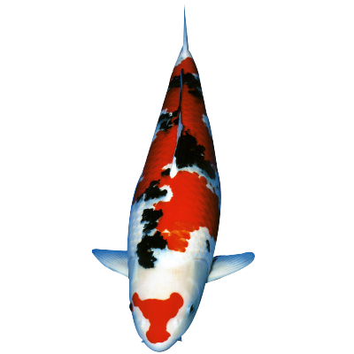
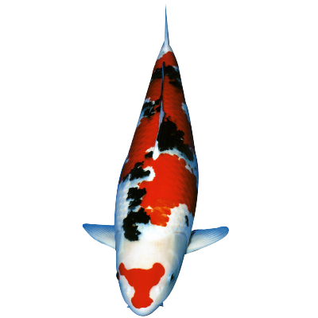

We are your one-stop shop for everything koi fish. We have everything you need to create a beautiful and thriving koi pond in your backyard, whether you're a seasoned koi enthusiast or just starting out.
Our store has a large selection of koi fish in a variety of colors, patterns, and sizes. Our koi fish are raised in Japan and imported with care to ensure their health and quality. We also sell koi food, filters, pumps, and other accessories to help you keep your koi pond healthy and vibrant.
Don't worry if you're new to koi. We have a team of experts who can assist you in selecting the best koi fish and accessories for your pond. We are dedicated to providing outstanding customer service and assisting you in creating a beautiful and enjoyable outdoor space.
Browse our online store and learn about our koi fish and accessories. Please do not hesitate to contact us if you have any questions or require assistance. Thank you for choosing us to supply your koi fish!


 
